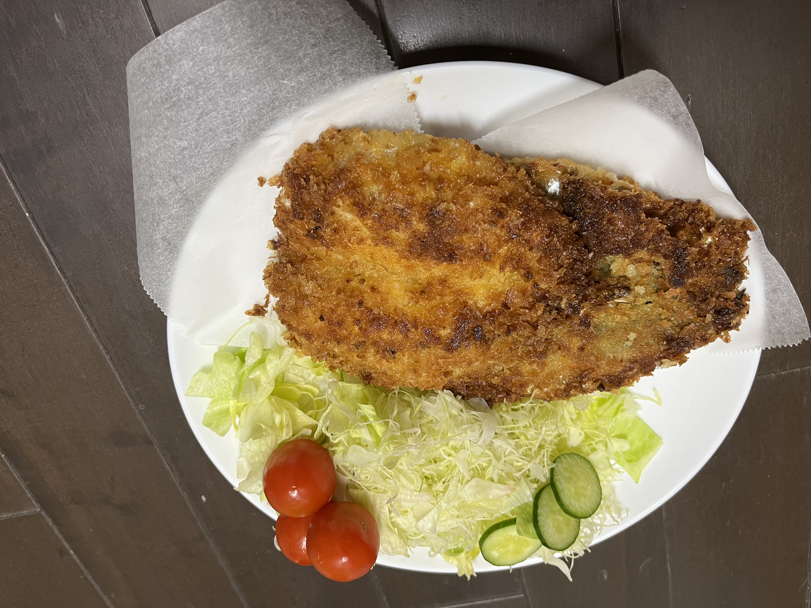

| レシピサイトID：117 |
| 元リンク： |
| サクサクジューシー！ 基本のアジフライ (2人分) |
| ジャンル： |
|  |
| 材料 |
|---|
| ・アジ(三枚おろし):2尾分 |
| ・塩こしょう:適量 |
| ・薄力粉:適量 |
| ・溶き卵:1個分 |
| ・パン粉:適量 |
| ・サラダ油:適量 |
| ・添え用: |
| ・キャベツ(千切り):適量 |
| ・ミニトマト:適量 |
| ・ウスターソース:適量 |
| 作り方 |
| 1. アジは塩こしょうをふって5分おく。キッチンペーパーで水気をふきとる。薄力粉、溶き卵、パン粉の順に衣をつける。 |
| 2. 鍋に底から3cmほどのサラダ油を入れて170℃に熱し、アジを入れて全体がきつね色になるまで揚げる。器に盛り、キャベツ、ミニトマト、ウスターソースを添える。 |